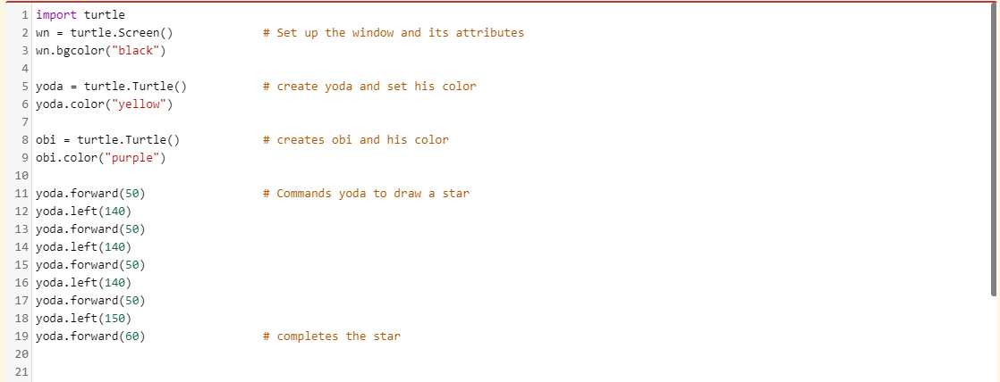
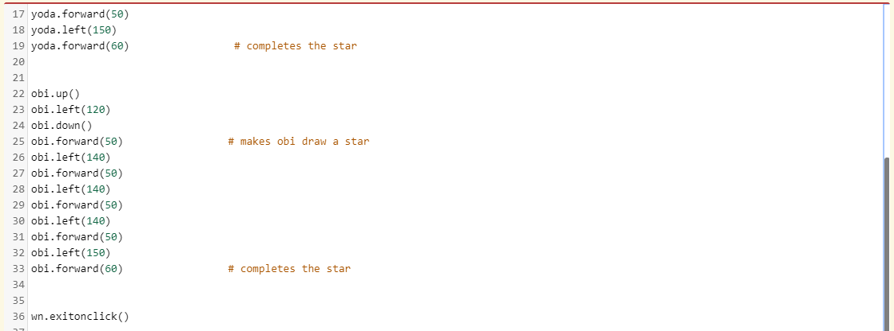
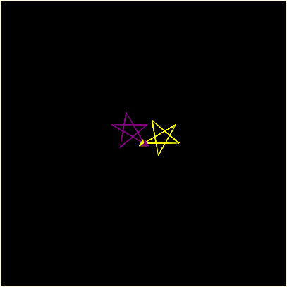

Chapter 5: Turtle Function
What is Turtle graphics?
Turtle graphics is the turtle module that was introduced in Chapter 4. With this module, the programmer can draw pictures of shapes, objects( such as houses,dart board, trees) and art(abstract art and 3D art).
How does the turle module work?
- The turtle is named and activated.
- The programmer commands the turtle to move forward, back, right or left.
- However, for the left and right directions, the numbers that the programmer puts on the parentheses are the angles that the turtle will rotate to go to.
- And the numbers that are in the forward and back directions, are the amount of pixels that the turtle will move in the screen/window.
- For the turtle to draw a picture, the programmer needs to command the turtle to put its tail down. Kind of like when a human is drawing; it needs to put the pencil/pen down to draw something. Now, if the programmer wants to move the turtle without drawing anything, they need to tell the turtle to put its tail up and then move to the desired direction.

This is the end result, notice how there are blank spots in between the lines. That's because the turtle was instructed to move without the tail down(making it not draw anything).

Can users use more than one turtle at the time?
Yes. Each turtle is called an instance, because they are independent objects, with their own attributes and methods, that makes them different from each other.
How to use multiple turtles?
Each turtle needs to have their own unique name and needs to be activated. Then the programmer needs to instruct each turtle to move in a certain direction. Each turtle starts in the same spot, which is in the middle of the screen, unless the programmer assigns the turtle to move before starting to draw.
Here is an example of using two different turtles:
 This is the end result:
